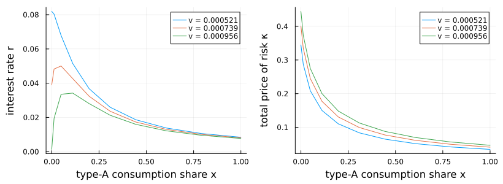

Gârleanu–Panageas with long-run risk: alternating values and prices
This example illustrates a useful way to write general-equilibrium asset-pricing systems. Rather than first solving the equilibrium pricing equations for the interest rate and prices of risk as functions of the value functions, we keep those prices as unknown functions on the grid. The unknown is
(pA, pB, ϕ1, ϕ2, r, κC, κM, κV)where the first four entries are valuation functions and the last four are state-dependent equilibrium price functions. Their equations are algebraic restrictions: the supplied r, κC, κM, and κV must equal the values implied by market clearing at that state.
This formulation is often better conditioned than eliminating prices. In a simple one-dimensional model, substituting the equilibrium r(V) and κ(V) formulas directly into the HJB can simplify the system. In higher-dimensional models with several prices of risk, the same substitution makes the PDE operator much more nonlinear: prices affect consumption volatilities, the wealth-share drift, upwind directions, and cross derivatives. Keeping prices as algebraic unknowns makes the system larger but cleaner: optimization equations and market-clearing equations are solved simultaneously.
The same trick can be useful in other asset-pricing models whenever endogenous prices, risk premia, or volatilities feed back strongly into the law of motion. It is not needed in every model: when the equilibrium prices have simple closed forms and substituting them leaves a well-conditioned HJB, the shorter reduced-form PDE is preferable. The computation alternates between fixed-price valuation equations and price updates from market clearing.
using EconPDEs
using Distributions
using Logging
using Plots
using Printf
struct GarleanuPanageasLongRunRiskModel
γA::Float64
ψA::Float64
γB::Float64
ψB::Float64
ρ::Float64
δ::Float64
νA::Float64
μbar::Float64
vbar::Float64
κμ::Float64
νμ::Float64
κv::Float64
νv::Float64
B1::Float64
δ1::Float64
B2::Float64
δ2::Float64
ω::Float64
end
function GarleanuPanageasLongRunRiskModel(;
γA = 1.5, ψA = 0.7, γB = 10.0, ψB = 0.05, ρ = 0.001,
δ = 0.02, νA = 0.01, μbar = 0.018, vbar = 0.00073,
κμ = 0.252, νμ = 0.528, κv = 0.156, νv = 0.00354,
B1 = 30.72, δ1 = 0.0525, B2 = -30.29, δ2 = 0.0611,
ω = 0.92)
scale = δ / (δ + δ1) * B1 + δ / (δ + δ2) * B2
return GarleanuPanageasLongRunRiskModel(γA, ψA, γB, ψB, ρ, δ,
νA, μbar, vbar, κμ, νμ, κv, νv, B1 / scale, δ1, B2 / scale, δ2, ω)
end
struct GarleanuPanageasLongRunRiskFrozenPriceModel
model::GarleanuPanageasLongRunRiskModel
stategrid::NamedTuple
r::Array{Float64, 3}
κC::Array{Float64, 3}
κM::Array{Float64, 3}
κV::Array{Float64, 3}
end
function (model::GarleanuPanageasLongRunRiskModel)(state::NamedTuple, u::NamedTuple)
(; γA, ψA, γB, ψB, ρ, δ, νA, μbar, vbar, κμ, νμ, κv, νv, B1, δ1, B2, δ2, ω) = model
(; x, μ, v) = state
pA, pB, ϕ1, ϕ2 = u.pA, u.pB, u.ϕ1, u.ϕ2
r, κC, κM, κV = u.r, u.κC, u.κM, u.κV
σc = sqrt(v)
μμ = κμ * (μbar - μ)
σμ = νμ * sqrt(v)
μv = κv * (vbar - v)
σv = νv * sqrt(v)
pAμ = (μμ >= 0) ? u.pAμ_up : u.pAμ_down
pBμ = (μμ >= 0) ? u.pBμ_up : u.pBμ_down
ϕ1μ = (μμ >= 0) ? u.ϕ1μ_up : u.ϕ1μ_down
ϕ2μ = (μμ >= 0) ? u.ϕ2μ_up : u.ϕ2μ_down
pAv = (μv >= 0) ? u.pAv_up : u.pAv_down
pBv = (μv >= 0) ? u.pBv_up : u.pBv_down
ϕ1v = (μv >= 0) ? u.ϕ1v_up : u.ϕ1v_down
ϕ2v = (μv >= 0) ? u.ϕ2v_up : u.ϕ2v_down
pAx, pBx, ϕ1x, ϕ2x = u.pAx_up, u.pBx_up, u.ϕ1x_up, u.ϕ2x_up
iter = 0
μx = 0.0
σxC = 0.0
σxM = 0.0
σxV = 0.0
σCA_C = 0.0
σCA_M = 0.0
σCA_V = 0.0
σCB_C = 0.0
σCB_M = 0.0
σCB_V = 0.0
κ2 = 0.0
mcA = 0.0
mcB = 0.0
@label start
Γ = 1 / (x / γA + (1 - x) / γB)
aA = (1 - γA * ψA) / (γA * (ψA - 1))
aB = (1 - γB * ψB) / (γB * (ψB - 1))
pAx_pA = pAx / pA
pBx_pB = pBx / pB
pAμ_pA = pAμ / pA
pBμ_pB = pBμ / pB
pAv_pA = pAv / pA
pBv_pB = pBv / pB
denom = 1 - x * aA * pAx_pA
σxC = x * (κC / γA - σc) / denom
σxM = x * (κM / γA + aA * pAμ_pA * σμ) / denom
σxV = x * (κV / γA + aA * pAv_pA * σv) / denom
σx2 = σxC^2 + σxM^2 + σxV^2
σpA_C = pAx_pA * σxC
σpA_M = pAx_pA * σxM + pAμ_pA * σμ
σpA_V = pAx_pA * σxV + pAv_pA * σv
σpB_C = pBx_pB * σxC
σpB_M = pBx_pB * σxM + pBμ_pB * σμ
σpB_V = pBx_pB * σxV + pBv_pB * σv
σCA_C = κC / γA + aA * σpA_C
σCA_M = κM / γA + aA * σpA_M
σCA_V = κV / γA + aA * σpA_V
σCB_C = κC / γB + aB * σpB_C
σCB_M = κM / γB + aB * σpB_M
σCB_V = κV / γB + aB * σpB_V
κ2 = κC^2 + κM^2 + κV^2
σpA2 = σpA_C^2 + σpA_M^2 + σpA_V^2
σpB2 = σpB_C^2 + σpB_M^2 + σpB_V^2
κσpA = κC * σpA_C + κM * σpA_M + κV * σpA_V
κσpB = κC * σpB_C + κM * σpB_M + κV * σpB_V
mcA = (1 + ψA) / (2 * γA) * κ2 + aA * κσpA - 0.5 * aA * σpA2
mcB = (1 + ψB) / (2 * γB) * κ2 + aB * κσpB - 0.5 * aB * σpB2
human_capital = ω * (B1 * ϕ1 + B2 * ϕ2)
μCA = ψA * (r - ρ) + mcA
μCB = ψB * (r - ρ) + mcB
μx = x * (μCA - μ) + δ * (νA / pA * human_capital - x) - σc * σxC
if (iter == 0) && (μx <= 0)
iter += 1
pAx, pBx, ϕ1x, ϕ2x = u.pAx_down, u.pBx_down, u.ϕ1x_down, u.ϕ2x_down
@goto start
end
pAxμ = (σxM * σμ >= 0) ? u.pAxμ_up : u.pAxμ_down
pBxμ = (σxM * σμ >= 0) ? u.pBxμ_up : u.pBxμ_down
ϕ1xμ = (σxM * σμ >= 0) ? u.ϕ1xμ_up : u.ϕ1xμ_down
ϕ2xμ = (σxM * σμ >= 0) ? u.ϕ2xμ_up : u.ϕ2xμ_down
pAxv = (σxV * σv >= 0) ? u.pAxv_up : u.pAxv_down
pBxv = (σxV * σv >= 0) ? u.pBxv_up : u.pBxv_down
ϕ1xv = (σxV * σv >= 0) ? u.ϕ1xv_up : u.ϕ1xv_down
ϕ2xv = (σxV * σv >= 0) ? u.ϕ2xv_up : u.ϕ2xv_down
ϕ1x_ϕ1 = ϕ1x / ϕ1
ϕ2x_ϕ2 = ϕ2x / ϕ2
ϕ1μ_ϕ1 = ϕ1μ / ϕ1
ϕ2μ_ϕ2 = ϕ2μ / ϕ2
ϕ1v_ϕ1 = ϕ1v / ϕ1
ϕ2v_ϕ2 = ϕ2v / ϕ2
σϕ1_C = ϕ1x_ϕ1 * σxC
σϕ1_M = ϕ1x_ϕ1 * σxM + ϕ1μ_ϕ1 * σμ
σϕ1_V = ϕ1x_ϕ1 * σxV + ϕ1v_ϕ1 * σv
σϕ2_C = ϕ2x_ϕ2 * σxC
σϕ2_M = ϕ2x_ϕ2 * σxM + ϕ2μ_ϕ2 * σμ
σϕ2_V = ϕ2x_ϕ2 * σxV + ϕ2v_ϕ2 * σv
μpA = pAx_pA * μx + pAμ_pA * μμ + pAv_pA * μv +
0.5 * u.pAxx / pA * σx2 + 0.5 * u.pAμμ / pA * σμ^2 +
0.5 * u.pAvv / pA * σv^2 + pAxμ / pA * σxM * σμ +
pAxv / pA * σxV * σv
μpB = pBx_pB * μx + pBμ_pB * μμ + pBv_pB * μv +
0.5 * u.pBxx / pB * σx2 + 0.5 * u.pBμμ / pB * σμ^2 +
0.5 * u.pBvv / pB * σv^2 + pBxμ / pB * σxM * σμ +
pBxv / pB * σxV * σv
μϕ1 = ϕ1x_ϕ1 * μx + ϕ1μ_ϕ1 * μμ + ϕ1v_ϕ1 * μv +
0.5 * u.ϕ1xx / ϕ1 * σx2 + 0.5 * u.ϕ1μμ / ϕ1 * σμ^2 +
0.5 * u.ϕ1vv / ϕ1 * σv^2 + ϕ1xμ / ϕ1 * σxM * σμ +
ϕ1xv / ϕ1 * σxV * σv
μϕ2 = ϕ2x_ϕ2 * μx + ϕ2μ_ϕ2 * μμ + ϕ2v_ϕ2 * μv +
0.5 * u.ϕ2xx / ϕ2 * σx2 + 0.5 * u.ϕ2μμ / ϕ2 * σμ^2 +
0.5 * u.ϕ2vv / ϕ2 * σv^2 + ϕ2xμ / ϕ2 * σxM * σμ +
ϕ2xv / ϕ2 * σxV * σv
σCAσpA = σCA_C * σpA_C + σCA_M * σpA_M + σCA_V * σpA_V
σCBσpB = σCB_C * σpB_C + σCB_M * σpB_M + σCB_V * σpB_V
κσpA_CA = κC * (σpA_C + σCA_C) + κM * (σpA_M + σCA_M) +
κV * (σpA_V + σCA_V)
κσpB_CB = κC * (σpB_C + σCB_C) + κM * (σpB_M + σCB_M) +
κV * (σpB_V + σCB_V)
pAt = -pA * (1 / pA + μCA + μpA + σCAσpA - r - δ - κσpA_CA)
pBt = -pB * (1 / pB + μCB + μpB + σCBσpB - r - δ - κσpB_CB)
κσϕ1_Y = κC * (σϕ1_C + σc) + κM * σϕ1_M + κV * σϕ1_V
κσϕ2_Y = κC * (σϕ2_C + σc) + κM * σϕ2_M + κV * σϕ2_V
ϕ1t = -ϕ1 * (1 / ϕ1 + μ - δ - δ1 + μϕ1 + σc * σϕ1_C - r - κσϕ1_Y)
ϕ2t = -ϕ2 * (1 / ϕ2 + μ - δ - δ2 + μϕ2 + σc * σϕ2_C - r - κσϕ2_Y)
κC_implied = Γ * (σc - x * aA * σpA_C - (1 - x) * aB * σpB_C)
κM_implied = Γ * (0.0 - x * aA * σpA_M - (1 - x) * aB * σpB_M)
κV_implied = Γ * (0.0 - x * aA * σpA_V - (1 - x) * aB * σpB_V)
r_implied = ρ + (μ - x * mcA - (1 - x) * mcB -
δ * ((νA / pA + (1 - νA) / pB) * human_capital - 1)) /
(ψA * x + ψB * (1 - x))
rt = r_implied - r
κCt = κC_implied - κC
κMt = κM_implied - κM
κVt = κV_implied - κV
return (; pAt, pBt, ϕ1t, ϕ2t, rt, κCt, κMt, κVt),
(; κ = sqrt(κ2), r_implied, κC_implied, κM_implied, κV_implied,
r_gap = rt, κC_gap = κCt, κM_gap = κMt, κV_gap = κVt,
pA_residual = pAt, pB_residual = pBt,
ϕ1_residual = ϕ1t, ϕ2_residual = ϕ2t,
μx, σx = sqrt(σx2), σxC, σxM, σxV)
end
function (model::GarleanuPanageasLongRunRiskFrozenPriceModel)(
state::NamedTuple, u::NamedTuple)
ix = searchsortedfirst(model.stategrid.x, state.x)
iμ = searchsortedfirst(model.stategrid.μ, state.μ)
iv = searchsortedfirst(model.stategrid.v, state.v)
u_with_prices = merge(u, (; r = model.r[ix, iμ, iv],
κC = model.κC[ix, iμ, iv],
κM = model.κM[ix, iμ, iv],
κV = model.κV[ix, iμ, iv]))
out, saved = model.model(state, u_with_prices)
return (; pAt = out.pAt, pBt = out.pBt, ϕ1t = out.ϕ1t, ϕ2t = out.ϕ2t), saved
endDefine the calibration and state grid.
m = GarleanuPanageasLongRunRiskModel()
xn, μn, vn = 10, 5, 5
μsd = sqrt(m.νμ^2 * m.vbar / (2 * m.κμ))
μdistribution = Normal(m.μbar, μsd)
vdistribution = Gamma(2 * m.κv * m.vbar / m.νv^2, m.νv^2 / (2 * m.κv))
xs = collect(range(0.0, 1.0, length = xn).^2)
μs = collect(range(quantile(μdistribution, 0.10),
quantile(μdistribution, 0.90), length = μn))
vs = collect(range(quantile(vdistribution, 0.10),
quantile(vdistribution, 0.90), length = vn))
stategrid = (; x = xs, μ = μs, v = vs)(x = [0.0, 0.012345679012345678, 0.04938271604938271, 0.1111111111111111, 0.19753086419753085, 0.308641975308642, 0.4444444444444444, 0.6049382716049383, 0.7901234567901234, 1.0], μ = [-0.007752308708945648, 0.005123845645527174, 0.017999999999999995, 0.03087615435447282, 0.04375230870894564], v = [0.0005209428343909922, 0.000629766522916652, 0.0007385902114423117, 0.0008474138999679716, 0.0009562375884936313])Define the initial guess for value functions and equilibrium price functions.
gridsize = map(length, values(stategrid))
pA = ones(gridsize...)
pB = ones(gridsize...)
ϕ1 = ones(gridsize...)
ϕ2 = ones(gridsize...)
r = zeros(gridsize...)
κC = zeros(gridsize...)
κM = zeros(gridsize...)
κV = zeros(gridsize...)
human_capital = m.ω * (m.B1 + m.B2)
for (ix, x) in pairs(stategrid.x), (iμ, μ) in pairs(stategrid.μ), (iv, v) in pairs(stategrid.v)
σc = sqrt(v)
Γ = 1 / (x / m.γA + (1 - x) / m.γB)
κC[ix, iμ, iv] = Γ * σc
κ2 = κC[ix, iμ, iv]^2
mcA = (1 + m.ψA) / (2 * m.γA) * κ2
mcB = (1 + m.ψB) / (2 * m.γB) * κ2
r[ix, iμ, iv] = m.ρ + (μ - x * mcA - (1 - x) * mcB -
m.δ * (human_capital - 1)) / (m.ψA * x + m.ψB * (1 - x))
end
guess = (; pA, pB, ϕ1, ϕ2, r, κC, κM, κV)(pA = [1.0 1.0 … 1.0 1.0; 1.0 1.0 … 1.0 1.0; … ; 1.0 1.0 … 1.0 1.0; 1.0 1.0 … 1.0 1.0;;; 1.0 1.0 … 1.0 1.0; 1.0 1.0 … 1.0 1.0; … ; 1.0 1.0 … 1.0 1.0; 1.0 1.0 … 1.0 1.0;;; 1.0 1.0 … 1.0 1.0; 1.0 1.0 … 1.0 1.0; … ; 1.0 1.0 … 1.0 1.0; 1.0 1.0 … 1.0 1.0;;; 1.0 1.0 … 1.0 1.0; 1.0 1.0 … 1.0 1.0; … ; 1.0 1.0 … 1.0 1.0; 1.0 1.0 … 1.0 1.0;;; 1.0 1.0 … 1.0 1.0; 1.0 1.0 … 1.0 1.0; … ; 1.0 1.0 … 1.0 1.0; 1.0 1.0 … 1.0 1.0], pB = [1.0 1.0 … 1.0 1.0; 1.0 1.0 … 1.0 1.0; … ; 1.0 1.0 … 1.0 1.0; 1.0 1.0 … 1.0 1.0;;; 1.0 1.0 … 1.0 1.0; 1.0 1.0 … 1.0 1.0; … ; 1.0 1.0 … 1.0 1.0; 1.0 1.0 … 1.0 1.0;;; 1.0 1.0 … 1.0 1.0; 1.0 1.0 … 1.0 1.0; … ; 1.0 1.0 … 1.0 1.0; 1.0 1.0 … 1.0 1.0;;; 1.0 1.0 … 1.0 1.0; 1.0 1.0 … 1.0 1.0; … ; 1.0 1.0 … 1.0 1.0; 1.0 1.0 … 1.0 1.0;;; 1.0 1.0 … 1.0 1.0; 1.0 1.0 … 1.0 1.0; … ; 1.0 1.0 … 1.0 1.0; 1.0 1.0 … 1.0 1.0], ϕ1 = [1.0 1.0 … 1.0 1.0; 1.0 1.0 … 1.0 1.0; … ; 1.0 1.0 … 1.0 1.0; 1.0 1.0 … 1.0 1.0;;; 1.0 1.0 … 1.0 1.0; 1.0 1.0 … 1.0 1.0; … ; 1.0 1.0 … 1.0 1.0; 1.0 1.0 … 1.0 1.0;;; 1.0 1.0 … 1.0 1.0; 1.0 1.0 … 1.0 1.0; … ; 1.0 1.0 … 1.0 1.0; 1.0 1.0 … 1.0 1.0;;; 1.0 1.0 … 1.0 1.0; 1.0 1.0 … 1.0 1.0; … ; 1.0 1.0 … 1.0 1.0; 1.0 1.0 … 1.0 1.0;;; 1.0 1.0 … 1.0 1.0; 1.0 1.0 … 1.0 1.0; … ; 1.0 1.0 … 1.0 1.0; 1.0 1.0 … 1.0 1.0], ϕ2 = [1.0 1.0 … 1.0 1.0; 1.0 1.0 … 1.0 1.0; … ; 1.0 1.0 … 1.0 1.0; 1.0 1.0 … 1.0 1.0;;; 1.0 1.0 … 1.0 1.0; 1.0 1.0 … 1.0 1.0; … ; 1.0 1.0 … 1.0 1.0; 1.0 1.0 … 1.0 1.0;;; 1.0 1.0 … 1.0 1.0; 1.0 1.0 … 1.0 1.0; … ; 1.0 1.0 … 1.0 1.0; 1.0 1.0 … 1.0 1.0;;; 1.0 1.0 … 1.0 1.0; 1.0 1.0 … 1.0 1.0; … ; 1.0 1.0 … 1.0 1.0; 1.0 1.0 … 1.0 1.0;;; 1.0 1.0 … 1.0 1.0; 1.0 1.0 … 1.0 1.0; … ; 1.0 1.0 … 1.0 1.0; 1.0 1.0 … 1.0 1.0], r = [0.03375388192964305 0.29127696901909944 … 0.8063231431980123 1.0638462302874687; 0.030208211297140544 0.25211640336358704 … 0.6959327874964801 0.9178409795629267; … ; 0.007345267717391194 0.030192332398931144 … 0.07588646176201104 0.09873352644355099; 0.00629777409026621 0.024692280310941672 … 0.061481292752292596 0.07987579897296805;;; 0.02232739463444878 0.27985048172390525 … 0.7948966559028182 1.0524197429922744; 0.020567563476454706 0.24247575554290124 … 0.6862921396757942 0.9082003317422408; … ; 0.007050007413562057 0.029897072095102006 … 0.0755912014581819 0.09843826613972186; 0.006099559514737328 0.024494065735412796 … 0.06128307817676372 0.07967758439743917;;; 0.010900907339254508 0.2684239944287109 … 0.7834701686076238 1.0409932556970802; 0.010926915655768869 0.23283510772221538 … 0.6766514918551085 0.8985596839215548; … ; 0.006754747109732923 0.02960181179127287 … 0.07529594115435277 0.09814300583589271; 0.005901344939208449 0.024295851159883912 … 0.061084863601234836 0.0794793698219103;;; -0.0005255799559397987 0.25699750713351666 … 0.7720436813124295 1.0295667684018859; 0.0012862678350830307 0.22319445990152953 … 0.6670108440344227 0.8889190361008691; … ; 0.0064594868059037825 0.02930655148744373 … 0.07500068085052364 0.09784774553206359; 0.005703130363679568 0.024097636584355032 … 0.060886649025705945 0.07928115524638142;;; -0.011952067251134034 0.24557101983832239 … 0.7606171940172353 1.0181402811066915; -0.008354379985602775 0.21355381208084373 … 0.6573701962137368 0.8792783882801832; … ; 0.006164226502074645 0.0290112911836146 … 0.07470542054669449 0.09755248522823444; 0.005504915788150689 0.02389942200882615 … 0.06068843445017707 0.07908294067085254], κC = [0.22824172151274014 0.22824172151274014 … 0.22824172151274014 0.22824172151274014; 0.21331822433690714 0.21331822433690714 … 0.21331822433690714 0.21331822433690714; … ; 0.041669976204053986 0.041669976204053986 … 0.041669976204053986 0.041669976204053986; 0.03423625822691102 0.03423625822691102 … 0.03423625822691102 0.03423625822691102;;; 0.25095149390203914 0.25095149390203914 … 0.25095149390203914 0.25095149390203914; 0.23454312699305968 0.23454312699305968 … 0.23454312699305968 0.23454312699305968; … ; 0.04581608791750226 0.04581608791750226 … 0.04581608791750226 0.04581608791750226; 0.037642724085305876 0.037642724085305876 … 0.037642724085305876 0.037642724085305876;;; 0.2717701623508938 0.2717701623508938 … 0.2717701623508938 0.2717701623508938; 0.25400057481256616 0.25400057481256616 … 0.25400057481256616 0.25400057481256616; … ; 0.04961694173648925 0.04961694173648925 … 0.04961694173648925 0.04961694173648925; 0.04076552435263407 0.04076552435263407 … 0.04076552435263407 0.04076552435263407;;; 0.29110374438814274 0.29110374438814274 … 0.29110374438814274 0.29110374438814274; 0.2720700380243027 0.2720700380243027 … 0.2720700380243027 0.2720700380243027; … ; 0.053146664076873545 0.053146664076873545 … 0.053146664076873545 0.053146664076873545; 0.04366556165822141 0.04366556165822141 … 0.04366556165822141 0.04366556165822141;;; 0.30923091509317613 0.30923091509317613 … 0.30923091509317613 0.30923091509317613; 0.2890119706447762 0.2890119706447762 … 0.2890119706447762 0.2890119706447762; … ; 0.05645613250761969 0.05645613250761969 … 0.05645613250761969 0.05645613250761969; 0.04638463726397642 0.04638463726397642 … 0.04638463726397642 0.04638463726397642], κM = [0.0 0.0 … 0.0 0.0; 0.0 0.0 … 0.0 0.0; … ; 0.0 0.0 … 0.0 0.0; 0.0 0.0 … 0.0 0.0;;; 0.0 0.0 … 0.0 0.0; 0.0 0.0 … 0.0 0.0; … ; 0.0 0.0 … 0.0 0.0; 0.0 0.0 … 0.0 0.0;;; 0.0 0.0 … 0.0 0.0; 0.0 0.0 … 0.0 0.0; … ; 0.0 0.0 … 0.0 0.0; 0.0 0.0 … 0.0 0.0;;; 0.0 0.0 … 0.0 0.0; 0.0 0.0 … 0.0 0.0; … ; 0.0 0.0 … 0.0 0.0; 0.0 0.0 … 0.0 0.0;;; 0.0 0.0 … 0.0 0.0; 0.0 0.0 … 0.0 0.0; … ; 0.0 0.0 … 0.0 0.0; 0.0 0.0 … 0.0 0.0], κV = [0.0 0.0 … 0.0 0.0; 0.0 0.0 … 0.0 0.0; … ; 0.0 0.0 … 0.0 0.0; 0.0 0.0 … 0.0 0.0;;; 0.0 0.0 … 0.0 0.0; 0.0 0.0 … 0.0 0.0; … ; 0.0 0.0 … 0.0 0.0; 0.0 0.0 … 0.0 0.0;;; 0.0 0.0 … 0.0 0.0; 0.0 0.0 … 0.0 0.0; … ; 0.0 0.0 … 0.0 0.0; 0.0 0.0 … 0.0 0.0;;; 0.0 0.0 … 0.0 0.0; 0.0 0.0 … 0.0 0.0; … ; 0.0 0.0 … 0.0 0.0; 0.0 0.0 … 0.0 0.0;;; 0.0 0.0 … 0.0 0.0; 0.0 0.0 … 0.0 0.0; … ; 0.0 0.0 … 0.0 0.0; 0.0 0.0 … 0.0 0.0])Alternate between prices and value functions. Holding r, κC, κM, and κV fixed, solve the valuation block (pA, pB, ϕ1, ϕ2). Then update prices toward the values implied by market clearing.
damping = 0.5
warmup_maxiters = 20
warmup_inner_maxiters = 10
warmups_between_global_attempts = 10
reuse_failed_global_tol = 1e-4
initial_result = with_logger(NullLogger()) do
pdesolve(m, stategrid, guess; alg = NonlinearSolve.TrustRegion(), Δ = Inf,
verbose = false)
end
@printf "%4s %-8s %12s %12s %12s %12s %12s %12s\n" "iter" "step" "r_gap" "κC_gap" "κM_gap" "κV_gap" "value_change" "residual"
@printf "%4d %-8s %12s %12s %12s %12s %12s %12.3e\n" 0 "global" "-" "-" "-" "-" "-" initial_result.residual_norm
if initial_result.converged
new_guess = initial_result.solution
result = initial_result
else
new_guess, result = let
if initial_result.residual_norm <= reuse_failed_global_tol
value_guess = (; pA = copy(initial_result.solution.pA),
pB = copy(initial_result.solution.pB),
ϕ1 = copy(initial_result.solution.ϕ1),
ϕ2 = copy(initial_result.solution.ϕ2))
r = copy(initial_result.solution.r)
κC = copy(initial_result.solution.κC)
κM = copy(initial_result.solution.κM)
κV = copy(initial_result.solution.κV)
candidate_guess = initial_result.solution
else
value_guess = (; pA = copy(guess.pA), pB = copy(guess.pB),
ϕ1 = copy(guess.ϕ1), ϕ2 = copy(guess.ϕ2))
r = copy(guess.r)
κC = copy(guess.κC)
κM = copy(guess.κM)
κV = copy(guess.κV)
candidate_guess = guess
end
price_iteration = 0
trial_result = nothing
warmups_since_global_attempt = 0
while trial_result === nothing
price_iteration += 1
frozen_model = GarleanuPanageasLongRunRiskFrozenPriceModel(
m, stategrid, r, κC, κM, κV)
frozen_result = with_logger(NullLogger()) do
pdesolve(frozen_model, stategrid, value_guess;
is_algebraic = (; pA = false, pB = false,
ϕ1 = false, ϕ2 = false),
alg = NonlinearSolve.TrustRegion(),
maxiters = warmup_maxiters,
inner_maxiters = warmup_inner_maxiters, verbose = false)
end
r_gap = maximum(abs, frozen_result.saved.r_gap)
κC_gap = maximum(abs, frozen_result.saved.κC_gap)
κM_gap = maximum(abs, frozen_result.saved.κM_gap)
κV_gap = maximum(abs, frozen_result.saved.κV_gap)
pA_change = maximum(abs, frozen_result.solution.pA .- value_guess.pA) /
max(1.0, maximum(abs, value_guess.pA))
pB_change = maximum(abs, frozen_result.solution.pB .- value_guess.pB) /
max(1.0, maximum(abs, value_guess.pB))
ϕ1_change = maximum(abs, frozen_result.solution.ϕ1 .- value_guess.ϕ1) /
max(1.0, maximum(abs, value_guess.ϕ1))
ϕ2_change = maximum(abs, frozen_result.solution.ϕ2 .- value_guess.ϕ2) /
max(1.0, maximum(abs, value_guess.ϕ2))
warmup_change = max(pA_change, pB_change, ϕ1_change, ϕ2_change)
value_guess = frozen_result.solution
r .= (1 - damping) .* r .+ damping .* frozen_result.saved.r_implied
κC .= (1 - damping) .* κC .+ damping .* frozen_result.saved.κC_implied
κM .= (1 - damping) .* κM .+ damping .* frozen_result.saved.κM_implied
κV .= (1 - damping) .* κV .+ damping .* frozen_result.saved.κV_implied
warmups_since_global_attempt += 1
candidate_guess = (; value_guess.pA, value_guess.pB, value_guess.ϕ1,
value_guess.ϕ2, r, κC, κM, κV)
@printf "%4d %-8s %12.3e %12.3e %12.3e %12.3e %12.3e %12s\n" price_iteration "values" r_gap κC_gap κM_gap κV_gap warmup_change "-"
if warmups_since_global_attempt >= warmups_between_global_attempts
trial_result = with_logger(NullLogger()) do
pdesolve(m, stategrid, candidate_guess;
alg = NonlinearSolve.TrustRegion(), Δ = Inf,
verbose = false)
end
@printf "%4d %-8s %12s %12s %12s %12s %12s %12.3e\n" price_iteration "global" "-" "-" "-" "-" "-" trial_result.residual_norm
warmups_since_global_attempt = 0
end
if trial_result !== nothing
if trial_result.converged
candidate_guess = trial_result.solution
break
end
if trial_result.residual_norm <= reuse_failed_global_tol
value_guess = (; pA = trial_result.solution.pA,
pB = trial_result.solution.pB,
ϕ1 = trial_result.solution.ϕ1,
ϕ2 = trial_result.solution.ϕ2)
r .= (1 - damping) .* r .+ damping .* trial_result.solution.r
κC .= (1 - damping) .* κC .+ damping .* trial_result.solution.κC
κM .= (1 - damping) .* κM .+ damping .* trial_result.solution.κM
κV .= (1 - damping) .* κV .+ damping .* trial_result.solution.κV
end
trial_result = nothing
continue
end
end
(; value_guess.pA, value_guess.pB, value_guess.ϕ1, value_guess.ϕ2,
r, κC, κM, κV), trial_result
end
end((pA = [26.39012772205977 22.855526439035355 … 15.485454234568746 13.173219536146284; 28.295696335128337 25.431183678094662 … 19.37761121646853 17.511959442126187; … ; 37.857117741570576 37.38974594902986 … 36.19577576608872 35.75341774410008; 38.544070376442825 38.14184261044329 … 37.102536357948615 36.71341888426632;;; 26.215472655139454 22.888319754532898 … 15.757618672903863 13.507383578225255; 28.135763428835325 25.436403747476813 … 19.57142275881669 17.76271183851953; … ; 37.81708279554634 37.373921816524 … 36.22286733026507 35.8018490225683; 38.50886765483206 38.12728601433174 … 37.12556996028107 36.75555274271717;;; 26.04647505903442 22.93245035310079 … 16.07389769772085 13.896056249723765; 27.9775285525788 25.448325691297647 … 19.800736535094995 18.05423558306667; … ; 37.77358785631902 37.35596007859848 … 36.25449331841162 35.856166515572156; 38.47051290949929 38.110743039505785 … 37.15245530149242 36.802724538581664;;; 25.90221420224826 22.971741773218916 … 16.363710725702912 14.255885860232725; 27.841499408027794 25.459178505557105 … 20.014012614429216 18.325402311594814; … ; 37.734615034460454 37.339412954940286 … 36.2836348549912 35.905407945320974; 38.43611324911278 38.09552520999818 … 37.17723032630262 36.8454370891519;;; 25.790987354050227 22.994006331898458 … 16.57206218202601 14.518364998196308; 27.737935135300617 25.4624473844964 … 20.168435577554284 18.52459208132497; … ; 37.705881064690324 37.32706547010703 … 36.30473351531255 35.94127491254666; 38.41078033143212 38.08421400790575 … 37.19517474537178 36.87653905193763], pB = [41.082747840072194 26.60458281901604 … 7.002592204388444 4.357204920151861; 44.70075488095135 31.384666284638808 … 11.93520164333613 8.406340449560796; … ; 35.11518231381894 33.7143891777443 … 30.305151995282433 29.102280572370088; 35.32303147379376 34.17810666484116 … 31.32619807401235 30.296954811752784;;; 40.1991594014232 26.674754889448508 … 7.321415912639495 4.633431669387579; 43.946329327878416 31.49276314023382 … 12.371463279270797 8.819065848721277; … ; 35.00891500419448 33.68359870093289 … 30.393676639777738 29.244056928801154; 35.23203697466721 34.14782930841139 … 31.397328694290955 30.415569318238106;;; 39.3151531360114 26.735694669930293 … 7.730464928144547 4.983254766873277; 43.20514425420202 31.610955909652716 … 12.903289897891108 9.323231124274637; … ; 34.89576312141182 33.64946590302337 … 30.497483134512194 29.404847371813897; 35.13439382476774 34.11397114117979 … 31.48065588505245 30.549579225422065;;; 38.57508527577068 26.787053972462154 … 8.141038212360627 5.338189943779721; 42.58670110896151 31.715445802462103 … 13.41710276503103 9.817865728198555; … ; 34.79492604605391 33.617648078102455 … 30.593057937304824 29.551372688126275; 35.04717036595519 34.08259241896213 … 31.55735194134813 30.67140111134444;;; 38.03994158613551 26.821299446297854 … 8.453169215633746 5.615039448720055; 42.13278610696278 31.782844652094585 … 13.801679631064214 10.19630084536573; … ; 34.719807502743905 33.59286762324353 … 30.661837293859573 29.65790585384611; 34.98242615898287 34.058599455437424 … 31.612584459313336 30.759935111196274], ϕ1 = [20.897743598325338 13.90143120146588 … 4.309578131930965 2.8479692937088905; 21.848754263817668 15.584208791359677 … 6.402636880449009 4.668621109722021; … ; 15.21158018166683 14.946922956181005 … 14.292377510736623 14.054815281242702; 15.277605292464091 15.12708093034714 … 14.74096590346454 14.596019442349828;;; 20.528429032153227 13.969792878491749 … 4.484239987122521 3.000848728898477; 21.540851363488223 15.661509578727337 … 6.612628462157825 4.8681384342753; … ; 15.191418959051793 14.940355079134607 … 14.307755684481691 14.080765012981837; 15.265212899285928 15.122215749280475 … 14.74936002584176 14.611262874287393;;; 20.167021137364685 14.04033032990762 … 4.700780602193463 3.1902990972051097; 21.245199656774613 15.74824867527424 … 6.8670761402948415 5.1101175207863845; … ; 15.169809797408154 14.932978802682381 … 14.325748989316505 14.109998462523976; 15.251781780724727 15.11670907401394 … 14.759173688333119 14.628334089978502;;; 19.866086297586037 14.102611927352422 … 4.914827400696094 3.3805017410531493; 21.00007388422566 15.826100095796443 … 7.113167504955017 5.347570281846356; … ; 15.150433017139463 14.926092829991253 … 14.342385105303528 14.136668043819396; 15.239697649818057 15.111605922495919 … 14.768247543149752 14.643848273926531;;; 19.64501499578776 14.145670803024382 … 5.078242490943117 3.5292740130619724; 20.817212115090587 15.878523245698615 … 7.298568926084402 5.530384081467895; … ; 15.135953832331655 14.920788884451888 … 14.354462643119371 14.15620408248103; 15.230714492063145 15.107755020871654 … 14.77484384357065 14.65520391872184], ϕ2 = [19.015248703289966 12.712861278023603 … 4.050923740183017 2.701495529017794; 19.76688446065128 14.140321901631841 … 5.887056805848197 4.316284931232371; … ; 13.538169407550372 13.306363309020028 … 12.733773776590816 12.525585404397656; 13.576886527653745 13.445647206179386 … 13.109501228193352 12.983098191199556;;; 18.6921719125824 12.78014607022564 … 4.211851415167643 2.842614481842974; 19.498117134125053 14.214021910823005 … 6.076349802546514 4.496325516541575; … ; 13.520716283021416 13.300709130275372 … 12.74703327538195 12.548026793750571; 13.566210339462245 13.441470108634078 … 13.116684335482663 12.99619681877477;;; 18.37749606438655 12.850444720534721 … 4.410160515970555 3.0168312693525112; 19.241289359442987 14.296915475164738 … 6.305432894088153 4.714364335255738; … ; 13.502014025038285 13.29435233586963 … 12.762541658425981 12.573288327068445; 13.55464171789603 13.436737918949317 … 13.125078730545345 13.010853316452392;;; 18.11581006294586 12.91273012431231 … 4.605652167734669 3.1914210850986837; 19.02866462231213 14.371454005594286 … 6.527040920638166 4.928330910778937; … ; 13.485229330371197 13.288410306818225 … 12.77689949785631 12.596357809014513; 13.544223027315526 13.432346643170852 … 13.132852153133115 13.024187875038844;;; 17.9229460708884 12.955942258672016 … 4.755029044741716 3.3280570827811915; 18.869514426605733 14.421916317314897 … 6.694221932080756 5.093271843697681; … ; 13.472667767953546 13.283827646822683 … 12.787347763505393 12.6132938494624; 13.536464895415998 13.429028475439983 … 13.138518196250658 13.033971723546964], r = [-0.42201022691788603 -0.17027416689268066 … 0.2440971082943189 0.6826739895244631; -0.368599796358861 -0.1549499372305001 … 0.25632350350436606 0.5376518249486066; … ; -0.032000722664010314 -0.010277332377491403 … 0.032320097444072875 0.053922947938382565; -0.025680978333597823 -0.008220491489746058 … 0.025981746274261593 0.04333230951586674;;; -0.4347628887283233 -0.18762644274428478 … 0.1991419065576432 0.6571534775949069; -0.379710526304216 -0.16910615712123384 … 0.23303993186831282 0.5208487793794863; … ; -0.03237171158776424 -0.010592685302357798 … 0.03211445202423823 0.0537793196515815; -0.025946638682189098 -0.008438344326785658 … 0.025856776943159562 0.043258327244096284;;; -0.44637387543504353 -0.20332199097657783 … 0.16666845996886764 0.6338249281122728; -0.38999342079837296 -0.18202976628066483 … 0.21408803253494046 0.5056537421361614; … ; -0.032747322175948196 -0.010909838590569102 … 0.03192395823586711 0.053654715034850815; -0.02621752628671844 -0.008659193324792957 … 0.02574305853542446 0.04319912369654595;;; -0.4577925096252802 -0.21835874155373303 … 0.1409733347739091 0.6123937872154299; -0.4001012123872002 -0.1944468352078954 … 0.19748894990116983 0.4915705448402647; … ; -0.03311447288155829 -0.011225640435434094 … 0.03172494250048998 0.053514091982273845; -0.026481035053700544 -0.008878724973895238 … 0.025622199123303338 0.04312652706300833;;; -0.46984326385411845 -0.23385763157439599 … 0.11397406092853565 0.5926543324232054; -0.41061214472325924 -0.20717051250944885 … 0.180592535197729 0.47805805118421585; … ; -0.033463859928053764 -0.011537355282437706 … 0.03149884143784365 0.05333092354181641; -0.02672803839138329 -0.00909322355489147 … 0.025479968191093338 0.04301941160210712], κC = [0.2282416402240668 0.22824173457544417 … 0.22824188605294987 0.22824185888989618; 0.2198173867007257 0.2245570414636459 … 0.22474082605470924 0.22867340195620345; … ; 0.041598966947405246 0.04159508661295694 … 0.04158545678945057 0.041581970444059146; 0.03423625669040965 0.034236257837919865 … 0.03423625802595491 0.03423625801981794;;; 0.25095141044715663 0.25095150527106524 … 0.25095167799714324 0.2509516519212147; 0.24196622578512106 0.24690829531752723 … 0.24671075258656666 0.25083888132871146; … ; 0.0457376104405729 0.04573356602047589 … 0.045723358428906284 0.04571970939723903; 0.037642722802579076 0.037642723649387075 … 0.03764272386425564 0.037642723860426025;;; 0.27177007937265873 0.27177017253201247 … 0.2717703641141871 0.2717703411825871; 0.2623669316227027 0.26743807830308747 … 0.2666859722569226 0.2709162035736835; … ; 0.049531472319329625 0.04952734698815046 … 0.04951676907725171 0.04951302908136336; 0.040765523225726165 0.040765523879027474 … 0.040765524113657324 0.04076552411256458;;; 0.2911036626292357 0.2911037539967901 … 0.2911039608993726 0.29110394298439124; 0.2813367991507595 0.2865139915689089 … 0.2851726954324133 0.28946470476011243; … ; 0.05305465119113481 0.05305047235297776 … 0.053039612346843686 0.05303580704663399; 0.04366556061674766 0.04366556115394564 … 0.043665561402876495 0.04366556140446305;;; 0.30923083557736236 0.30923092545973085 … 0.30923113874796815 0.3092311276889455; 0.29908598222247407 0.3043841835028157 … 0.3025587711103687 0.30693115039473645; … ; 0.05635803126370564 0.05635377830528969 … 0.056342607889831725 0.0563387225830666; 0.0463846362515993 0.04638463673077206 … 0.046384636991365844 0.04638463699525614], κM = [-0.1718508763412584 -0.22465303397919398 … -0.4876084390771065 -0.28746265758523176; -0.1362772800564963 -0.1772663699878157 … -0.2908862962524921 -0.19709648958772313; … ; 0.0011060411719426874 0.001448097382749365 … 0.0014292820979484658 0.0010853336750441785; 0.001627659563134591 0.0021394574430823247 … 0.0021696447025918936 0.0016531402065719577;;; -0.180342957569337 -0.23963728808669083 … -0.5194756640336404 -0.3026502220020082; -0.1427470451406343 -0.18847878230316226 … -0.3092809058649089 -0.20759332065158065; … ; 0.0011545467584934267 0.001534289080936007 … 0.001514786914513284 0.0011336491078257366; 0.0016993022213580298 0.0022669368567782705 … 0.002299037983736695 0.0017264254935965661;;; -0.1857096721613031 -0.25057863577992023 … -0.5366968279704534 -0.31212407892869987; -0.1466333425324497 -0.19636513339061795 … -0.32028527290924447 -0.21390264314842172; … ; 0.0011797468190586345 0.0015891228432956851 … 0.0015695135959490907 0.0011592278459549347; 0.0017368155700069714 0.0023483227209612403 … 0.002381410724248211 0.0017648806351312145;;; -0.18995670898489395 -0.25961747828686027 … -0.5470573889684716 -0.31897592092654703; -0.14962728401811537 -0.2027716767635764 … -0.3279183719484027 -0.21834889720262274; … ; 0.001197045581154587 0.0016307190859507345 … 0.0016112021620179454 0.001177020865431318; 0.001762763748870659 0.002410263354940283 … 0.002443886487463071 0.0017913975545850822;;; -0.19471765885285303 -0.26887103511662563 … -0.5597529829461969 -0.32657368641826584; -0.15310748863618168 -0.2094649974986613 … -0.33658836415979587 -0.22341398905076074; … ; 0.0012197954636167302 0.0016767610566134632 … 0.0016571608110303017 0.0011999962892853297; 0.0017966296068218622 0.0024786935325523717 … 0.0025130049307364654 0.00182594625005687], κV = [-0.008071712178291883 0.0012694013911027247 … 0.01736671321254466 0.02384011524344859; -0.006032036172647955 0.0013143879070477249 … 0.013343951874119884 0.018225008439982954; … ; 8.094886576037828e-5 3.682562732548087e-5 … -4.5818381697656556e-5 -8.911751999844478e-5; 0.00011302346785904856 4.7239979339301684e-5 … -7.678530634777133e-5 -0.0001419710631041088;;; -0.009022700411795039 0.0012936431798195353 … 0.023246955837578433 0.031114607330650145; -0.006614326064893061 0.0015930617266429886 … 0.017202104313960957 0.02324608761680446; … ; 9.776697288926063e-5 4.636731906433393e-5 … -5.863372943839389e-5 -0.00010905627754989825; 0.00013552100461148458 5.9053598584672706e-5 … -9.847958011362351e-5 -0.00017455656812262569;;; -0.00998187515368979 0.0013962623617218366 … 0.02388092314098759 0.03141376156979234; -0.0072926287917318006 0.0017190728890993292 … 0.01785403249599327 0.023799723067773754; … ; 0.00010588368804030328 5.0228968797946984e-5 … -6.35922939616588e-5 -0.00011830058339359644; 0.00014690964667292194 6.398039179871797e-5 … -0.00010657223466788442 -0.0001887953971031184;;; -0.009105346864349117 0.0012756025549174063 … 0.02431932096982563 0.03186784964214304; -0.006616997901739603 0.0016287528254060055 … 0.017743343745108307 0.023700362540498156; … ; 0.00010193026210445014 4.93683559588415e-5 … -6.289977726611406e-5 -0.00011456290206214456; 0.00014125866490307241 6.30659805947913e-5 … -0.00010512565351340127 -0.00018289848299778844;;; -0.007112107475147128 0.0009117853079980427 … 0.018951165768527033 0.025165048163923266; -0.005232701206322938 0.0011156601623399018 … 0.013717833764767364 0.018542410913733855; … ; 7.938663578583617e-5 3.851877851735007e-5 … -4.869774834075697e-5 -8.887406990935058e-5; 0.00011057414430534133 4.980595432694215e-5 … -8.08487384676715e-5 -0.0001413598223217611]), EconPDEResult
solution: pA (10×5×5), pB (10×5×5), ϕ1 (10×5×5), ϕ2 (10×5×5), r (10×5×5), κC (10×5×5), κM (10×5×5), κV (10×5×5)
saved: pA, pB, ϕ1, ϕ2, r, κC, κM, κV, κ, r_implied, κC_implied, κM_implied, κV_implied, r_gap, κC_gap, κM_gap, κV_gap, pA_residual, pB_residual, ϕ1_residual, ϕ2_residual, μx, σx, σxC, σxM, σxV
residual_norm: 1.91e-12
converged: true (tolerance 1.49e-08))The solution
The model has three state variables, so we inspect one-dimensional slices of the equilibrium price schedules. First vary expected growth $\mu$ while holding variance fixed at the middle grid point. Then vary variance $v$ while holding expected growth fixed at the middle grid point. The total price of risk is $\kappa = \sqrt{\kappa_C^2 + \kappa_\mu^2 + \kappa_v^2}$.
xgrid = stategrid.x
μ_mid_index = cld(length(stategrid.μ), 2)
v_mid_index = cld(length(stategrid.v), 2)
μ_indices = unique([1, μ_mid_index, length(stategrid.μ)])
v_indices = unique([1, v_mid_index, length(stategrid.v)])
r_by_μ = plot(; xlabel = "type-A consumption share x", ylabel = "interest rate r")
κ_by_μ = plot(; xlabel = "type-A consumption share x", ylabel = "total price of risk κ")
for iμ in μ_indices
label = "μ = $(round(stategrid.μ[iμ]; digits = 3))"
plot!(r_by_μ, xgrid, result.solution.r[:, iμ, v_mid_index]; label)
plot!(κ_by_μ, xgrid, result.saved.κ[:, iμ, v_mid_index]; label)
end
plot(r_by_μ, κ_by_μ; layout = (1, 2), size = (820, 300))
r_by_v = plot(; xlabel = "type-A consumption share x", ylabel = "interest rate r")
κ_by_v = plot(; xlabel = "type-A consumption share x", ylabel = "total price of risk κ")
for iv in v_indices
label = "v = $(round(stategrid.v[iv]; sigdigits = 3))"
plot!(r_by_v, xgrid, result.solution.r[:, μ_mid_index, iv]; label)
plot!(κ_by_v, xgrid, result.saved.κ[:, μ_mid_index, iv]; label)
end
plot(r_by_v, κ_by_v; layout = (1, 2), size = (820, 300))
This page was generated using Literate.jl.